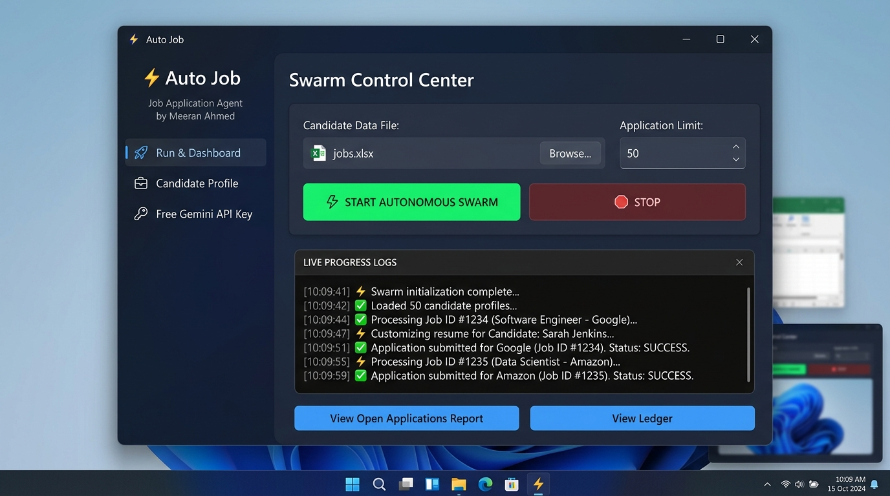

Automate your job applications
with intelligent browser workers.
Stop hand-typing repetitive contact forms and re-uploading resumes for hours every day. Auto Job is a multi-engine automation agent that navigates and submits applications across Greenhouse, Lever, Ashby, and Workable using your personal free Google Gemini API key.
What You See When You Launch Auto Job
When you download Auto Job and double-click launcher.bat, this is the exact, clean desktop interface that opens on your screen:

Easily switch between Run & Dashboard, Candidate Profile (upload your PDF resume), and Free Gemini Key.
Click Browse to select your custom Excel sheet (jobs.xlsx) containing job URLs, and set your desired application limit.
Tap the big green START AUTONOMOUS SWARM button. Watch the live console window as browser agents auto-fill each job.
When finished, click View Open Applications Report to open your generated Markdown and JSON ledger with direct confirmation links.
Step-by-Step Installation for Every Device
Select your device below. Everything is pre-configured so you can run your first batch of applications in under 2 minutes.
Windows Quick Setup
Download the zip archive and extract it anywhere on your computer (e.g. Desktop).
launcher.bat
Simply double-click the launcher.bat file inside the extracted folder. It immediately opens the dark-mode desktop window shown above.
In the GUI's Keys tab, paste your free Google Gemini API key (get one here in 60s), upload your resume, select your spreadsheet, and tap Start Autonomous Swarm.
macOS & Linux Setup
git clone https://github.com/meeran-ahmed/auto-apply-job-Agent.git && cd auto-apply-job-Agent
launcher.sh
chmod +x launcher.sh && ./launcher.sh
Input candidate parameters, load your resume and jobs spreadsheet, and launch the swarm.
Mobile Setup (1-Click Google Colab Cloud Runner)
Smartphones cannot run background desktop Selenium browsers natively. We built a 1-Click Google Colab Runner that runs the headless browser inside Google's free cloud servers at $0 cost!
Tap below to launch our ready-to-run Colab notebook on your smartphone:
Run Step 1 to install the cloud browser. In Step 2, enter your name, email, phone, upload your resume from your phone, and enter your free Gemini key.
The cloud browser will automatically apply to every job. When finished, your phone will automatically download APPLICATIONS_REPORT.md showing all application receipts.
Tablet & iPad Setup
Open Safari or Chrome on your iPad/tablet and launch the runner:
Attach your resume and spreadsheet right from iPadOS or Android storage.
Watch live execution and review submitted applications in your Downloads folder.
Why You Use Your Own Free Gemini API Key
Auto Job does not use a shared developer key. Every applicant brings their personal, 100% free key from Google AI Studio. Here is why this protects everyone:
1. Google Gives It Free
Google AI Studio provides every standard Gmail account with 15 requests per minute and 1,000,000 tokens daily at zero cost. No credit card is required.
2. Zero Rate-Limit Bottlenecks
If hundreds of applicants shared Meeran's single developer API key, Google would throttle or block the key immediately. Using your own key gives you a dedicated, unthrottled line.
3. Complete Privacy & Isolation
Your API key is saved exclusively in your local data_folder/secrets.yaml file. It is never transmitted to any external server or saved in Git.
How to grab your free key in 60 seconds:
Go to aistudio.google.com/app/apikey and sign in with any standard Gmail account.
Click the blue button and choose "Create API key in new project". Copy your generated key.
Paste it in the Keys tab (or Colab form) and save. Your setup is complete and ready to use!
Frequently Asked Questions
Yes. Auto Job is 100% free and open-source under the MIT license. The browser automation executes entirely on your device (or in Google Colab's free cloud environment), and screening analysis runs via Google's free Gemini API quota (1M tokens/day with zero credit card).
No. Neither you nor the developer will ever be charged. Google AI Studio provides 1,000,000 free tokens daily to every Google account with no billing required.
No. By default, Auto Job applies directly through company applicant tracking systems (Greenhouse, Lever, Ashby, Workable, etc.) via your custom spreadsheet. It strictly avoids LinkedIn to ensure your personal LinkedIn profile is never flagged or banned.
Yes. Your resume, phone number, address, and credentials are saved locally in your own data_folder/. They are never transmitted to any third-party server.
Meeran Ahmed R.
Full Stack & AI Systems Engineer. Building open-source tools to streamline the developer hiring journey.